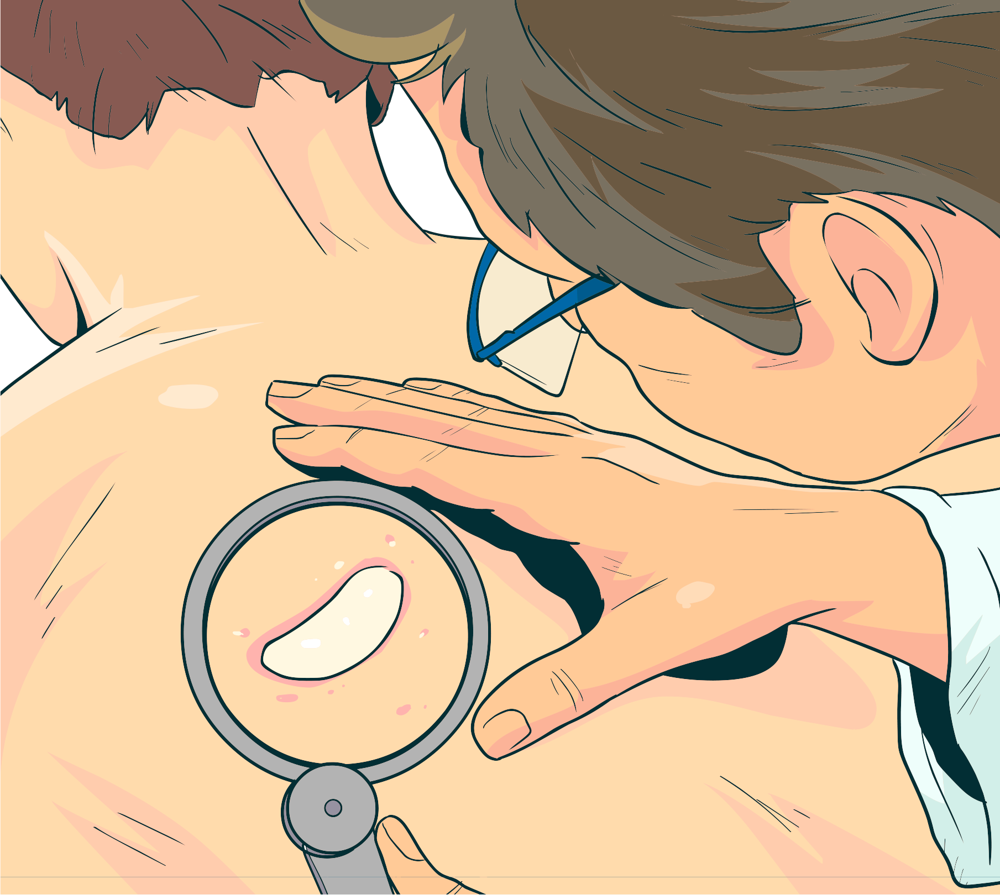

Principais manifestações da hanseníase
Uma das principais manifestações da hanseníase é a presença de manchas esbranquiçadas, acastanhadas ou avermelhadas que apresentam uma diminuição da sensibilidade em relação ao toque, ao frio, ao calor e à dor.
Também é possível que a pessoa se queixe de choques e câimbras nos braços e nas pernas, que podem evoluir para dormência. Sendo assim, a pessoa se queima ou se machuca e não sente dor.